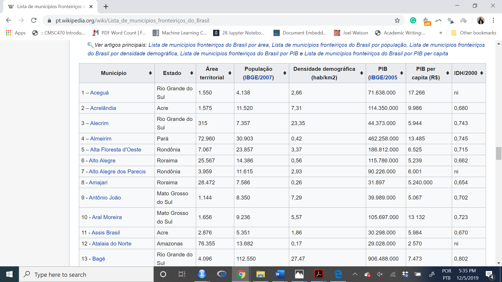
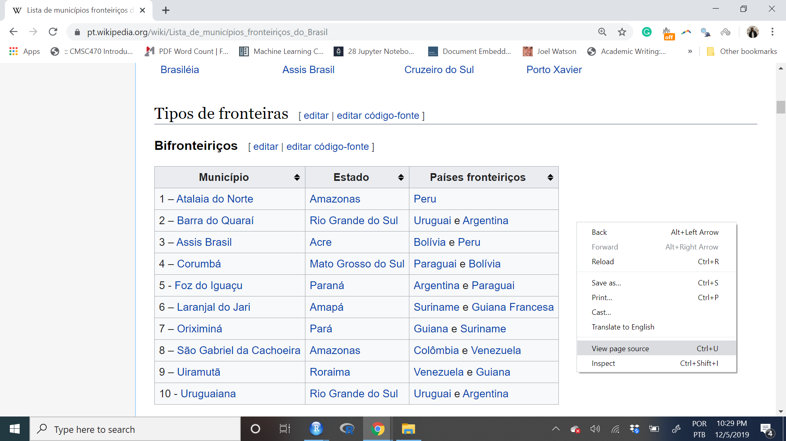
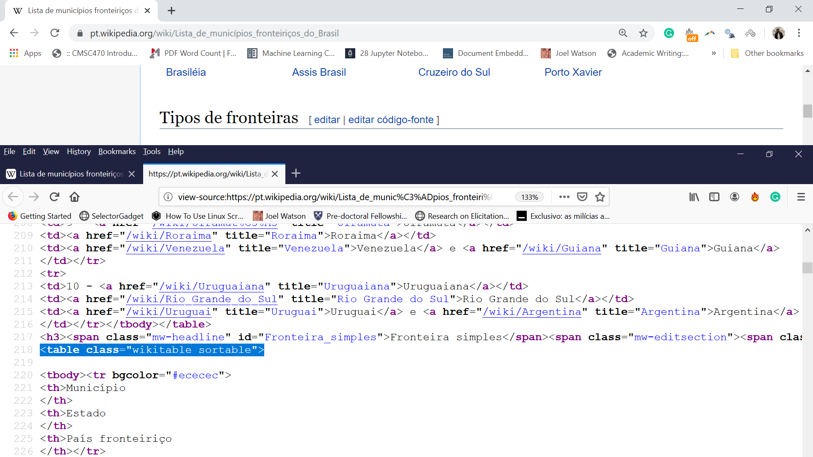
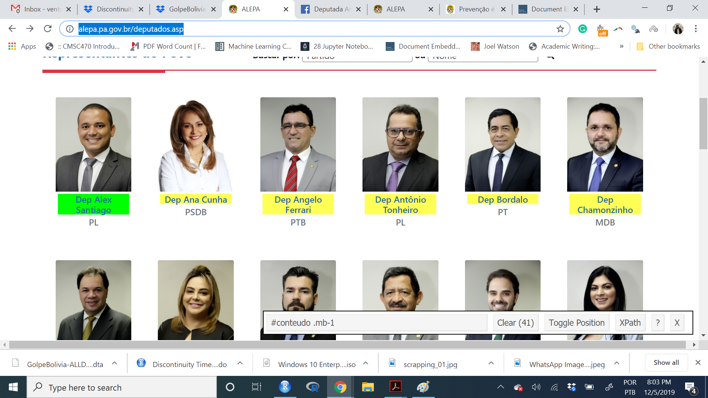

Raspagem de Dados em Webpages
Acessando dados na Internet.
O objetivo deste workshop é ensinar os primeiros passos de como coletar dados na internet. Há duas formas principais de acessar dados na internet.
Raspar dados em websites: coleta informação diretamente do site, da parte que qualquer pessoa visualiza. É como se você pudesse se multiplicar por mil, e coletar manualmente.
Acessar APIs (Interface de Programação de Aplicações): acessar um canal por trás da webpage por onde dados são gerados e compartilhados.
Acessar dados via APIs é mais seguro, prático, e rápido. Raspar dados é mais difícil, e mais desafiador. Por isso, sempre opte pela segunda. Porém, a grande maioria dos sites não possuem APIs, por isso, é bom aprender ambos.
O que é raspagem de dados ?
Raspagem de dados consiste em coletar automaticamente dados disponíveis em sites da internet. Teóricamente, você pode fazer isso a mão, ou pedir para amigos te ajudarem. Porém, neste mundo de dados abundantes, isso pode não ser viável, e,em geral, pode se tornar mais difícil depois de que você aprendeu a coletar automáticamente. Alguns exemplos de sites que eu coletei dados: dados eleitorais no congresso, composição de elites ao redor do mundo, informação de municípios disponível no wikipedia, programas de governo dos candidatos a prefeito no site do TSE, preço de imóveis no site do Zap Móveis, entre outros.
A rotina básica de raspagem consiste em três etapas:
- Carregar o nome das páginas da internet
- Fazer o download dos sites em formato HTML ou XML
- Encontrar as partes do site que são do seu interesse (aqui dá bastante trabalho)
- Limpar e processar os dados
Em termos de programação, e é desta forma que iremos organizar o workshop, este processo consiste em:
- Tentar com apenas um site todos os passos acima
- Escrever um funçao em R para você repetir de forma automática a operação
- Aplicar a função a sua lista de sites.

Desafios Teóricos para raspagem de dados.
Raspar dados na internet traz diversas vantagens às nossas atividades de pesquisadores. Entre elas, acesso à dados novos, coleta mais rápida de dados, informações mais detalhadas sobre determinados casos. Porém, há alguns desafios ao trabalhar com dados coletados em páginas da internet.
Dados Incompletos: Apesar de serem Big data, dados coletados na internet em geral são incompletes. Por exemplo: comportamento tóxico no twitter. Você pode coletar os dados, porém, muitos dos comentários mais tóxicos já são banidos de início.
Inacessíveis: Nem todos os dados são acessíveis. Por exemplo, o Facebook depois do escândalo da Cambridge Analytics interrompeu o funcionamento de sua APIs.
Não-Representativos: 2 Bilhões de tweets no Brasil funcionam como uma boa representação da sociedade brasileira?
Bias nos algoritimos: Redes sociais e sites estão sempre modificando seus algoritimos. Isso torna muitas pesquisas difíceis de reproduzir. Portanto, um desafio ao conhecimento científico.
Selection Bias: As pessoas posssuem incentivo para mentir nas redes, e se auto selecionarem em determinados grupos. É a velha história de só compartilhar as coisas boas no Instagram.
Ética em Raspagem de Dados
Antes de começar, é pertinente entender como os sites e seus servidores subjacentes funcionam, bem como algumas regras básicas que devemos seguir ao coletar dados deles. Cada chamada para um servidor web leva tempo, ciclos de servidor e memória. A maioria dos servidores pode lidar com tráfego significativo, mas não pode necessariamente lidar com a tensão induzida por solicitações automatizadas maciças. Seu código pode sobrecarregar o site, tirando-o do ar, ou leavando o administrador do site a banir seu IP.
Não queremos ser vistos como comprometendo um site por alguns motivos. Primeiro, essa sobrecarga pode travar um servidor e impedir que outros usuários acessem o site. Segundo, servidores e hosters podem e implementam contramedidas (ou seja, bloqueiam nosso acesso a partir de nosso IP e assim por diante). Abordaremos mais tarde maneiras de impedir que nossos raspadores sejam vistos como cometendo esse tipo de ataque. Por isso, segue uma lista de boas práticas:
- Respeite o robots.txt
- Não atinja servidores com muita frequência
- Retarde seu código para a velocidade que humanos fariam manualmente
- Encontre sites de origem confiáveis
- Não raspe durante o horário de pico
- Melhore a velocidade do seu código
- Use dados com responsabilidade (Como acadêmicos geralmente fazem)
Raspando Sites Estáticos
Rotinas
- Encontre o site
- Pratique com um caso
- Torne-se o mestre nesse caso
- Escreva uma funçao para expandir a coleta
- Salve.
Encontre um site: Mas o que é um site?
Um site em geral é uma combinação entre HTML e Javascript. HTML forma o que chamamos de sites estáticos - tudo o que você vê está lá na programação. Javascript produzem sites dinâmicos - aqueles que você navega e clica e a url não muda - e são sites normalmente alimentados por um banco de dados no fundo da programação. Aqui vamos tratar de sites estáticos usando o pacote de R rvest. Para sites dinâmicos, eu sugiro trabalhar com selenium, porém, não cobriremos selenium neste curso.
Segue um exemplo simples de um site. Se você clicar com o botão direito do seu mouse em uma página da interne, ir para inspecionar elemento, aparecerá algo parecido com isto:
<html>
<head>
<title> Michael Cohen's Email </title>
<script>
var foot = bar;
<script>
</head>
<body>
<div id="payments">
<h2>Second heading</h2>
<p class='slick'>information about <br/><i>payments</i></p>
<p>Just <a href="http://www.google.com">google it!</a></p>
<table>Esta linguagem se chama HTML, e está por trás de todos os sites. É uma linguagem de texto estruturada por marcações (tags). O segredo para raspagem é basicamente identificar quais marcações você pretende coletar informação.
Para identificar o marcador do seu interesse, há dois caminhos. O primeiro caminho é inspecionar o elemento da página clicando no botão direito do seu mouse. A segunda opção é´usar esta ferramenta sensacional chamada Selector Gadget. Esta ferramenta nos permite encontrar exatamente o marcador que queremos para pegar a informação.
Vamos começar com exemplos simples.
Exemplo 1: Municípios de Fronteira no Brasil.
Para um paper sobre efeitos da ditadura militar no Brasil, eu queria coletar dados sobre todos os municípios de fronteira no Brasil. Esta página do wikipedia tem a informação já processada.

Para encontrar manualmente qual o marcador dessa tabela, fazemos algo assim:

E encontramos a tabela que nos interessa.

Vamos começar nosso percurso no R
# Instalar pacotes
install.packages("tidyverse")
install.packages("purrr")
install.packages("rvest")
install.packages("stringr")
install.packages("kableExtra")
install.packages("Rcurl")# Ativar os pacotes
library("tidyverse")
library("purrr")
library("rvest")
library("stringr")
library("kableExtra")
# Crie o nome da sua url
minha_url <- "https://pt.wikipedia.org/wiki/Lista_de_munic%C3%ADpios_fronteiri%C3%A7os_do_Brasil"
# Somente o nome
print(minha_url)[1] "https://pt.wikipedia.org/wiki/Lista_de_munic%C3%ADpios_fronteiri%C3%A7os_do_Brasil"# Raspe os dados. Simples assim:
source <- read_html(minha_url)
# O que é esse objeto?
class(source) # XML=HTML[1] "xml_document" "xml_node" # Como extrair a tabela?
tabelas <- source %>% rvest::html_table()
# O que eu tenho aqui?
map(tabelas, head)[[1]]
Município Estado Países fronteiriços
1 1 – Atalaia do Norte Amazonas Peru
2 2 – Barra do Quaraí Rio Grande do Sul Uruguai e Argentina
3 3 – Assis Brasil Acre Bolívia e Peru
4 4 – Corumbá Mato Grosso do Sul Paraguai e Bolívia
5 5 - Foz do Iguaçu Paraná Argentina e Paraguai
6 6 – Laranjal do Jari Amapá Suriname e Guiana Francesa
[[2]]
Município Estado País fronteiriço
1 1 - Aceguá Rio Grande do Sul Uruguai
2 2 - Acrelândia Acre Bolívia
3 3 - Alecrim Rio Grande do Sul Argentina
4 4 - Almeirim Pará Suriname
5 5 - Alta Floresta d'Oeste Rondônia Bolívia
6 6 - Alto Alegre Roraima Venezuela
[[3]]
Município Estado Área territorial
1 1 – Aceguá Rio Grande do Sul 1.550
2 2 – Acrelândia Acre 1.575
3 3 – Alecrim Rio Grande do Sul 315.000
4 4 – Almeirim Pará 72.960
5 5 – Alta Floresta d'Oeste Rondônia 7.067
6 6 - Alto Alegre Roraima 25.567
População (IBGE/2007) Densidade demográfica (hab/km2) PIB (IBGE/2005
1 4.138 2,66 71.638.000
2 11.520 7,31 114.350.000
3 7.357 23,35 44.373.000
4 30.903 0,42 462.258.000
5 23.857 3,37 186.812.000
6 14.386 0,56 115.786.000
PIB per capita (R$) IDH/2000
1 17.266 ni
2 9.986 0,680
3 5.944 0,743
4 13.485 0,745
5 6.525 0,715
6 5.239 0,662O que fizemos aqui ocorreu basicamente a partir de duas funções. O read_html foi responsãvel por converter a página da web em html. O html_table extraí todas as tabelas desta webpage.
Limpar e Salvar nossos primeiros dados
tabela_limpa <- tabelas[[3]] %>%
# Converte para um banco de dados mais bonito
as.tibble() %>%
# Cria Duas novas Colunas
mutate(city = Município, uf_name = Estado) %>% select(city, uf_name) %>%
# conserta o enconding
mutate(city = str_sub(city, 5), city = str_replace(city, pattern = "- ", ""),
city = str_trim(city), city_key = stringi::stri_trans_general(city, "Latin-ASCII"),
city_key = str_replace_all(city_key, " ", ""), city_key = str_to_lower(city_key))
tabela_limpa %>% slice(1:5) %>% kable(.) %>% kable_styling(full_width = F)| city | uf_name | city_key |
|---|---|---|
| Aceguá | Rio Grande do Sul | acegua |
| Acrelândia | Acre | acrelandia |
| Alecrim | Rio Grande do Sul | alecrim |
| Almeirim | Pará | almeirim |
| Alta Floresta d’Oeste | Rondônia | altaflorestad’oeste |
Exemplo 2: Municípios com Eleições em 1985
# Selecione a URL
minha_url <- "https://pt.wikipedia.org/wiki/Elei%C3%A7%C3%B5es_municipais_no_Brasil_em_1985"
# Pega a página
page <- read_html(minha_url)
substr(html_text(page), 1, 1000) # first 1000 characters[1] "Eleições municipais no Brasil em 1985 – Wikipédia, a enciclopédia livredocument.documentElement.className=\"client-js\";RLCONF={\"wgBreakFrames\":!1,\"wgSeparatorTransformTable\":[\",\\t.\",\" \\t,\"],\"wgDigitTransformTable\":[\"\",\"\"],\"wgDefaultDateFormat\":\"dmy\",\"wgMonthNames\":[\"\",\"janeiro\",\"fevereiro\",\"março\",\"abril\",\"maio\",\"junho\",\"julho\",\"agosto\",\"setembro\",\"outubro\",\"novembro\",\"dezembro\"],\"wgMonthNamesShort\":[\"\",\"jan.\",\"fev.\",\"mar.\",\"abr.\",\"mai.\",\"jun.\",\"jul.\",\"ago.\",\"set.\",\"out.\",\"nov.\",\"dez.\"],\"wgRequestId\":\"XegV-wpAIC8AAD9rR3wAAABK\",\"wgCSPNonce\":!1,\"wgCanonicalNamespace\":\"\",\"wgCanonicalSpecialPageName\":!1,\"wgNamespaceNumber\":0,\"wgPageName\":\"Eleições_municipais_no_Brasil_em_1985\",\"wgTitle\":\"Eleições municipais no Brasil em 1985\",\"wgCurRevisionId\":56511611,\"wgRevisionId\":56511611,\"wgArticleId\":2532957,\"wgIsArticle\":!0,\"wgIsRedirect\":!1,\"wgAction\":\"view\",\"wgUserName\":null,\"wgUserGroups\":[\"*\"],\"wgCategories\":[\"Eleições municipais no Brasil em 1985\"],\"wgPageContentLanguage\":\"pt\",\"wgPageContentMode"# Pegue as tabelas
out <- page %>% html_nodes(".wikitable") %>% html_table()
# Combinando as tabelas
out_cap <- out[1]
out_mun <- out[2:19]
ot_municipios <- out_mun %>% bind_rows()
ot_municipios %>% slice(1:5) %>% kable(.) %>% kable_styling(full_width = F)| Bandeira | Município | Prefeito eleito | Partido |
|---|---|---|---|
| NA | Assis Brasil | José Vieira da Silva | PMDB |
| NA | Brasileia | Messias Ribeiro | PMDB |
| NA | Cruzeiro do Sul | João Barbosa | PMDB |
| NA | Feijó | Lívio Severiano | PMDB |
| NA | Mâncio Lima | Paulo Dene | PMDB |
Pronto. Temos uma tabela com os municípios e os prefeitos eleitos nas eleições extraordinárias de 1985. Agora, podemos salvar estes dado em .csv e tê-los em nosso computador.
Saving
write.csv(ot_municipios, "mun_1985.csv")Raspagem de dados usando CSS Selector
Raspar dados de tabelas é tarefa fácil. Tudo fica mais complicado quando os sites possuem estruturas mais complexas, e precisamos usar os marcadores do site. Para isto, usaremos o CSS Selector Gadget. Neste exemplo, vou acessar a pagina privada de cada um dos 41 deputados da Assembléia Legislativa do Estado do Pará. Vamos coletar:
- Nome
- Biografia
- Partido
- Endereco do Twitter
Exemplo do CSS Selector

Quando você ativa o CSS no seu computador, basta dar um clique na informação que você quer extrair (amarelo), e um segundo clique caso você esteja capturando mais do que precisa. Na foto acima, eu estou selecionando todos os nomes dos deputados do Pará.
Processando os nomes
# Coleta de todos os nomes
minha_url <- "https://www.alepa.pa.gov.br/deputados.asp"
nomes <- read_html(minha_url) %>% html_nodes(css = "#conteudo .mb-1") %>% html_text()
# Limpa os nomes
nomes_limpos <- nomes %>% str_remove_all(., "Dep") %>% str_to_lower() %>% str_trim() %>%
str_replace_all(" ", "") %>% str_replace("\\.", "") %>% stringi::stri_trans_general("Latin-ASCII")Agora, que eu tenho esta lista de nomes, eu vou usá-la para acessar cada página dos deputados. Lembre-se, nossa estratégia é sempre fique mestre em um caso, e depois expanda. Vamos começar com um deputado.
# url base
base_url <- "https://www.alepa.pa.gov.br/"
# Combina com o nome do deputado
url_dep <- paste0(base_url, nomes_limpos)
head(url_dep)[1] "https://www.alepa.pa.gov.br/alexsantiago"
[2] "https://www.alepa.pa.gov.br/anacunha"
[3] "https://www.alepa.pa.gov.br/angeloferrari"
[4] "https://www.alepa.pa.gov.br/antoniotonheiro"
[5] "https://www.alepa.pa.gov.br/bordalo"
[6] "https://www.alepa.pa.gov.br/chamonzinho" # Vamos usar uma função para ver se cada link existe
library(RCurl)
id <- map(url_dep, url.exists)
id %>% unlist() %>% tibble(id = ., nomes_limpos) %>% filter(id == FALSE)# A tibble: 2 x 2
id nomes_limpos
<lgl> <chr>
1 FALSE bordalo
2 FALSE martinhocarmonaOk! Nós temos dois nomes com problemas. Vamos consertar manualmente. Eu chequei no site da alepa os nomes corretos
nomes_limpos <- nomes_limpos %>% str_replace("bordalo", "carlosbordalo") %>%
str_replace("martinhocarmona", "deputado.asp?id_rep=129")
# Repetir nosso controle de qualidade
# Combina com o nome do deputado
url_dep <- paste0(base_url, nomes_limpos)
head(url_dep)[1] "https://www.alepa.pa.gov.br/alexsantiago"
[2] "https://www.alepa.pa.gov.br/anacunha"
[3] "https://www.alepa.pa.gov.br/angeloferrari"
[4] "https://www.alepa.pa.gov.br/antoniotonheiro"
[5] "https://www.alepa.pa.gov.br/carlosbordalo"
[6] "https://www.alepa.pa.gov.br/chamonzinho" # Vamos usar uma função para ver se cada link existe
library(RCurl)
id <- map(url_dep, url.exists)
id %>% unlist() %>% tibble(id = ., nomes_limpos) %>% filter(id == FALSE)# A tibble: 0 x 2
# ... with 2 variables: id <lgl>, nomes_limpos <chr>Raspando um caso
# url
url_dep1 <- url_dep[[1]]
# source
source <- url_dep1 %>% read_html()
# Informações de nosso interesse
nome <- url_dep1 %>% str_remove("https://www.alepa.pa.gov.br/")
posicao <- source %>% html_nodes(css = ".col-lg-8 .col-lg-8 .text-primary") %>%
html_text()
biografia <- source %>% html_nodes(css = ".col-lg-8 .col-lg-8 p") %>% html_text() %>%
paste0(., collapse = " ")
noticias <- source %>% html_nodes(css = ".font-weight-bold a") %>% html_attr("href")
twitter <- source %>% html_nodes(css = ".p-2 a") %>% html_attr("href") %>% str_subset("twitter")
email <- source %>% html_nodes(css = ".mt-0 a") %>% html_attr("href") %>% str_subset("@") %>%
str_remove("mailto:")
# Combina tudo como um banco de dados
deputados <- data_frame(url_dep1, nome, posicao, biografia, noticias, twitter,
email)
deputados# A tibble: 1 x 7
url_dep1 nome posicao biografia noticias twitter email
<chr> <chr> <chr> <chr> <chr> <chr> <chr>
1 https://www~ alexs~ Deputado~ " Alex José de~ /notici~ https://w~ dep.al~Finalizamos agora nossa primeira etapa. Precisamos expandir isso para todos os 41 deputados. Para isso, vamos escrever uma função em R, e aplicar a função a todos os nossos deputados.
Funções em R: Very brief overview
O objetivo da função é evitar que você repita o seu código muitas vezes. Se você precisar usar o mesmo código mais de três vezes, você deve escrever uma função. Parece complicado, mas é simples. A função possui três argumentos
- O nome da função.
- Os inputs da função.
- O que a função faz.
nome_da_funcao <- function(arg1,arg2){
# O que ela faz
out <- what the function does.
# Output
return(out) # output
}Exemplo Função
add_me <- function(argument1, argument2) {
value <- argument1 + argument2
return(value) # 'return' means 'send this back once the function is done'
}
add_me(2, 3)[1] 5Nossa função para raspagem.
Para escrevr nossa função, basta alterar os inputs. Ou seja, mudamos onde tinhamos url_dep1 para url ou qualquer outro nome genérico.
url <- url_dep[[1]]
raspar_alepa <- function(url) {
# Mudamos onde tinhamos url_dep1 para url.
source <- url %>% read_html() # unica modificacao
# Informações de nosso interesse
nome <- url %>% str_remove("https://www.alepa.pa.gov.br/")
posicao <- source %>% html_nodes(css = ".col-lg-8 .col-lg-8 .text-primary") %>%
html_text()
biografia <- source %>% html_nodes(css = ".col-lg-8 .col-lg-8 p") %>% html_text() %>%
paste0(., collapse = " ")
noticias <- source %>% html_nodes(css = ".font-weight-bold a") %>% html_attr("href")
twitter <- source %>% html_nodes(css = ".p-2 a") %>% html_attr("href") %>%
str_subset("twitter") %>% .[1]
email <- source %>% html_nodes(css = ".mt-0 a") %>% html_attr("href") %>%
str_subset("@") %>% str_remove("mailto:")
# Combina tudo como um banco de dados
deputados <- tibble(url_dep1, nome, posicao, biografia, noticias, twitter,
email)
# Output
return(deputados)
# Desligando R um pouco para nao sobrecarregar os dados
Sys.sleep(sample(5:10, 1))
}
# Vamos aplicar a função a somente um caso
raspar_alepa(url_dep[[20]])# A tibble: 1 x 7
url_dep1 nome posicao biografia noticias twitter email
<chr> <chr> <chr> <chr> <chr> <chr> <chr>
1 https://www~ erald~ Deputado~ " Eraldo Jorge ~ /noticia~ <NA> dep.era~
Aplicando uma função à multiplos elementos
Há diversas formas de aplicar uma função à multiplos objetos. Esse processo é tecnicamente chamado programação funcional. Uma opção é fazer um loop sobre nossa função. No entanto, R é uma linguagem funcional e não gosta de loops. Uma segunda opção é usar uma função como lapply. No entanto, lapply functions produzem resultados inconsistentes, e por isso, eu costumo evitá-las. Para acelerar muito as coisas, e obter soluções mais consistentes, eu uso o pacote purrr e as funções map. Caso vocês queiram aprender mais sobre as funções map, podem checar aqui, aqui, e aqui.
# Aplicando nossa lista de links a uma funcção.
dados <- map(url_dep, raspar_alepa)
# Combine tudo
dados <- bind_rows(dados)
# Vamos ver
kable(dados) %>% kable_styling() %>% scroll_box(width = "100%", height = "200px")| url_dep1 | nome | posicao | biografia | noticias | ||
|---|---|---|---|---|---|---|
| https://www.alepa.pa.gov.br/alexsantiago | alexsantiago | Deputado Estadual - PL | Alex José de Aquino Santiago, 32 anos, administrador, nasceu em Redenção-PA, no dia 20 de dezembro de 1986, casado com advogada Majorri Cerqueira de Aquino Santiago, pai de Heloisa Cerqueira De Aquino Santiago, de 5 anos de idade, é evangélico, pertence a igreja Assembléia de Deus, onde serve com o diácono. Alex é filho do casal, Pr. Pedro Santiago e da missionária e professora Maria De Jesus Pereira Aquino Santiago. Em 2004 aos 18 anos de idade, já promovido como vendedor de peças automotivas, Alex desempenhou suas atividades com seriedade, entrou na faculdade de ensino superior da Amazônia (REUNIDA-FESAR), no curso de administração de empresas, no qual todas as despesas foram custadas por conta própria. Em 2007, praticamente na fase final do curso, Alex Santiago incentivado pelo seu pai filiou-se ao PTB (Partido Trabalhista Brasileiro), reuniu com seus amigos, colegas de faculdade, principalmente com sua família e partiu para vida pública, ouvindo as pessoas, lideranças políticas e sobretudo levantando as necessidades e as viabilidades do município. Em 2009 concluiu o curso de bacharel em administração, ainda no mesmo ano filiou-se ao PTB e no ano seguinte com apenas 20 anos de idade colocou seu nome para apreciação popular, sendo eleito como segundo vereador mais votado, em 2009 aos 21 anos de idade entrou para vida pública, servindo o povo e resgatando compromissos. Em 2012, aos 24 anos se reelegeu com o mesmo compromisso e obteve 3.404 votos. Em 2014 concorreu a uma cadeira na Assembleia legislativa e obteve aproximadamente 25.000 mil votos. Em 2018 nas eleições Alex Santiago concorreu a vaga de Deputado Estadual e se elegeu somando 39.193 votos (0,98% válidos) em toda região Sul e Sudeste Hoje aos 32 anos de idade Alex Santiago já percorreu todo o Sul e Sudeste do Pará se tornando conhecedor profundo das reais necessidades do povo. | /noticiasdep/107/D | https://www.twitter.com/DepAlexSantiago | dep.alexsantiago@alepa.pa.gov.br |
| https://www.alepa.pa.gov.br/alexsantiago | anacunha | Deputada Estadual - PSDB | Médica Ginecologista e Obstetra. Iniciou a sua vida pública em 1995 como Secretária de Ação Social, do município de Barcarena (PA), sua cidade natal, exercendo a função no período de 2001 a 2002.Em 2003, foi eleita como Deputada Estadual do Pará. Na Assembleia Legislativa do Estado do Pará (Alepa), exerceu importantes funções nas comissões de trabalho da Casa, sendo eleita a primeira secretária da mesa Diretora da Assembleia. Foi integrante ativa do Parlamento Amazônico, órgão colegiado formado por parlamentares de 10 estados, com a finalidade de promover o intercâmbio de informações e experiências para definir políticas públicas para o desenvolvimento e defesa da Amazônia. A sua atuação parlamentar sempre foi voltada para as ações de incentivo aos programas sociais, a qualificação e extensão dos programas de saúde pública, políticas públicas para as mulheres, prevenção à gravidez na adolescência e o combate ao abuso sexual infantil. Com base em projetos de sua autoria, mais de trinta leis já foram sancionadas e estão em vigência no Pará, ajudando a melhorar a vida das pessoas. Em 2016, como parlamentar, foi eleita presidente da União Nacional dos Legisladores e Legislativos Estaduais (Unale), entidade que congrega as Assembleias Legislativas do Brasil e se configura como uma das organizações políticas mais importantes das Américas. Em 2017, exerceu o cargo de Secretária de Estado de Assistência Social, Trabalho, Emprego e Renda (Seaster), com a missão de dar continuidade na promoção social com qualidade e efetividade. Permaneceu a frente da Seaster até março de 2018, e atualmente, reassumiu seu quinto mandato de deputada estadual, na Alepa. Neste ano de 2019, assumiu a presidência da Secretaria Especial de Inclusão Social, da Unale. | /noticiasdep/104/D | NA | dep.anacunha@alepa.pa.gov.br |
| https://www.alepa.pa.gov.br/alexsantiago | angeloferrari | Deputado Estadual - PTB | /noticiasdep/108/D | NA | dep.angeloferrari@alepa.pa.gov.br | |
| https://www.alepa.pa.gov.br/alexsantiago | antoniotonheiro | Deputado Estadual - PL | Antônio Tonheiro, a simplicidade que o povo precisa. Antônio Gomes de Lima, o deputado estadual Antonio Tonheiro é um homem do campo. Tem a simplicidade da gente do interior. É filho de Capitão Poço, onde nasceu, em 09 de novembro de 1966. Filho de Antonio Alves de Lima e Maria Gomes de Lima, é o primeiro de nove irmãos.Se tem uma coisa que ele conhece bem são as dificuldades da vida. Começou a trabalhar muito cedo, desde a infância, no cultivo da laranja, para ajudar os pais no sustento da família.Homem simples, mas determinado, Tonheiro casou-se com Maria do Socorro Pires Souza com quem tem três filhos. Focado no crescimento pessoal e profissional, com muito esforço e honestidade, conseguiu se destacar no ramo empresarial, construindo o que é hoje o Grupo Tonheiro que tem como empreendimentos a Lima Citrus, Casa Lima Agronegócio, Casa de Carne Lima, Pizzaria e choperia Lima, Lima Ferro e Aço, Moto Peças Lima e Lima Informática; os quais têm gerado emprego e renda para muitas famílias da região.Dedicado em ajudar a população, Tonheiro sempre colaborou com Ações Sociais que viabilizasse atendimentos em saúde, trabalho, renda e cidadania as mais necessitados.O amor e o respeito que possui por sua cidade natal foram determinantes para que ele aceitasse lançar o seu nome para representar o povo de seu Estado, como deputado estadual.Agora, está no seu segundo mandato. Seu trabalho e comprometimento com o povo o levou a alcançar, nas urnas, 47.354 votos. Hoje membro do PR, ocupa uma das cadeiras da 19ª legislatura do parlamento estadual; missão que ele tem procurado desenvolver com muita honestidade, ética e dedicação, sempre comprometido com seu povo. | /noticiasdep/109/D | NA | dep.antoniotonheiro@alepa.pa.gov.br |
| https://www.alepa.pa.gov.br/alexsantiago | carlosbordalo | Deputado Estadual - PT | Deputado estadual reeleito para o terceiro mandato, Carlos Bordalo foi líder do PT na Assembleia Legislativa do Pará em 2011. Atuante A marcante identificação com a luta em defesa dos direitos humanos é o diferencial que faz com que o deputado estadual Carlos Bordalo seja considerado uma referência na área entre seus pares, independentemente do matiz ideológico de cada um. desde muito jovem começou na Pastoral da Juventude da igreja de São Sebastião. Foi uma das mais importantes lideranças do movimento de luta pela moradia no populoso bairro da Sacramenta, onde se consolidou a formação humanística que iria perpassar toda sua trajetória política, ancorada na formação cristã e na Ideologia da Libertação, presentes em sua atuação na Assembleia Legislativa, onde preside a Comissão de Direitos Humanos e Defesa do Consumidor. Entre os trabalhos mais marcantes na Assembleia Legislativa, foi autor da CPI da Pedofilia, presidiu a CPI do Tráfico Humano e foi o relator da CPI das Milícias. Até o primeiro semestre de 2015, teve 67 projetos transformados em leis no Estado Conheça alguns projetos do deputado Carlos Bordalo PROJETOS DE LEI Fica denominado Guilherme Paraense, o ginásio Poliesportivo do Estádio Olímpico do Pará, conhecido como “Mangueirinho”. Institui o passe livre temporário do trabalhador desempregado no transporte público Metropolitano e Intermunicipal rodoviário e aquaviário do Estado do Pará. Declara o “Surf na Pororoca” que ocorre anualmente no Rio Capim, Município de São Domingos do Capim, Patrimônio Cultural e Imaterial do Estado do Pará. Cria o Patronato Penitenciário do Estado do Pará. Declara e reconhece como de Utilidade Pública para o Estado do Pará a ABRASPO Associação Brasileira de Surf na Pororoca. Dispõe sobre a obrigatoriedade de realização de processo seletivo para contratação de estagiários na Administração Pública Direta e Indireta do Estado do Pará. Institui a Habilitação Social, programa social de formação, qualificação e habilitação profissional de condutores de veículos automotores. Dispõe sobre dispensa de taxas para renovação de Carteira Nacional de Habilitação do motorista profissional desempregado ou impedido de trabalhar temporariamente no âmbito do Estado do Pará. Declara e reconhece como de Utilidade Pública para o Estado do Pará o Sindicato dos Empregados Rurais dos Municípios de Aurora do Pará, Ipixuna do Pará e Mãe do Rio, no Estado do Pará. Dispõe sobre as normas de segurança e manutenção de brinquedos e equipamentos lúdicos dos parques infantis (playgrounds) localizados em logradouros públicos e estabelecimentos de educação infantil e de ensino fundamental. Dispõe sobre a obrigatoriedade das instituições de ensino em Educação Básica no Estado do Pará em dar publicidade ao Índice de Desenvolvimento da Educação Básica – IDEB. MOÇÕES Sobre o empreendedorismo social como componente curricular nos ensino fundamental e médio das Escolas Públicas do Estado do Pará. Dispõe sobre a obrigatoriedade das instituições de ensino em Educação Básica no Estado do Pará em dar publicidade ao Índice de Desenvolvimento da Educação Básica – IDEB. Solicita da Prefeitura Municipal de Belém providências para recuperação e preservação do mercado de São Brás, tombado pelo Patrimônio histórico municipal e estadual em 1982, que apresentam sérios sinais de deterioração. Solicita que seja suprido as necessidades de infraestrutura da Escola São Geraldo no Município de São Domingos do Capim. Requer que seja dado conhecimento a população do Município de Cametá sobre os motivos no atraso da reforma do Centro de Formação Profissional de Cametá, localizado na cidade de Cametá Pará. Solicita providências da Divisão de Repressão ao Crime Organizado – DRCO e da Delegacia de Repressão a Furtos e Roubos de Veículos Automotores – DRFRV quanto aos seus depósitos de veículos a céu aberto que têm contribuído para focos de proliferação do Aedes aegypti. Solicita providências do Governo do Estado do Pará na resolução de conflitos no Assentamento Luiz Inácio Lula da Silva, localizado no Município de Paragominas onde famílias estão ameaças de morte por fazendeiro. Solicita construção de uma Unidade Pro Paz Integrado no município de Abaetetuba para atendimento às crianças, adolescentes, mulheres e suas famílias em situação de Violências na região Tocantina. Solicita que seja dado ciência aos órgãos que atuam na área de Direitos Humanos no Estado do Pará sobre emenda apresentada por este Deputado e aprovada no Orçamento Geral do Estado para o período de 2016 a 2019 para implementação do Programa de Proteção a Pessoas ameaçadas – PPCAM, PROVITA e PPDDH. Solicita ao Ministério da Cidade, ao Instituto Nacional de Colonização e Reforma Agrária - INCRA e ao Ministério do Desenvolvimento Agrário - MDA, suporte imediato das Políticas e Programas de regularização fundiária para o enfrentamento dos processos de desenvolvimento urbano informal no município de Itaituba. Solicita ao Ministério Público Estadual investigação a respeito de denúncias sobre supostas mortes ocorridas no Pronto Socorro Municipal Humberto Maradei (HPSM do Guamá) em função da retirada de aparelhos anestésicos para serem utilizados em outro Serviço de Saúde. Solicita a Companhia de Saneamento do Pará – COSANPA e a Secretaria de Estado de Desenvolvimento de Obras – SEDOP, em caráter de urgência, providências relacionadas ao problema do abastecimento de água para a população do Município de Breves. REQUERIMENTOS Realização de Sessão Especial no dia 18 de fevereiro de 2016 para debater sobre o Projeto de revitalização do Complexo Ver o Peso, reurbanização da área do estacionamento e restauração do Solar da Beira. Requer informações da Secretaria de Segurança Pública e Defesa Social do Estado do Pará sobre a apuração do assassinato da menor Maria Eduarda Félix Lourenço ocorrido no mês de novembro de 2015, no Município de São Domingos do Araguaia. Convida o Secretário de Estado da Fazenda, Dr. Nilo Emanoel Rendeiro de Noronha e o Procurador-Geral do Estado, Dr. Antônio Saboia de Mello Neto, para prestarem esclarecimentos sobre a dívida ativa tributária e não tributária do Estado. convida o Secretário de Desenvolvimento Econômico, Mineração e Energia - SEDEME, Adnan Demachki, para prestar esclarecimentos sobre o Projeto PARÁ 2030 - Um Mundo de Oportunidades e sobre o Protocolo de intenções assinado pelo Governo do Estado e as empresas Vale e Cevital Group para implementação de uma Siderúrgica em Marabá com previsão para início das obras ainda este ano. Requer informações da Prefeitura Municipal de Belém e da Secretaria Municipal de Saúde de Belém - SESMA a respeito de supostas mortes ocorridas no Pronto Socorro Humberto Maradei em função da retirada de aparelhos anestésicos Requer informações da Secretaria Estadual de Estado do Pará - SESPA sobre quais providências foram tomadas para melhoria do atendimento aos portadores de hanseníases no Estado do Pará, com base em recomendações feitas pela Comissão de Direitos Humanos e Defesa do Consumidor - CDHDC/Alepa. Requer informações da Secretaria Estadual de Educação do Pará - SEDUC sobre o plano de reformas e ampliação das escolas localizadas em Belém e região metropolitana com seus respectivos cronogramas de execução. Solicita informações sobre que providências foram tomadas para garantir restauração e preservação do imóvel onde funcionou a Fundação Cultural do Município de Belém (Fumbel), no bairro da Cidade Velha. Entre os trabalhos mais marcantes na Assembleia Legislativa, foi autor da CPI da Pedofilia, presidiu a CPI do Tráfico Humano e foi o relator da CPI das Milícias. Até o primeiro semestre de 2015, teve 67 projetos transformados em leis no Estado. | /noticiasdep/106/D | https://twitter.com/bordalopt | dep.bordalo@alepa.pa.gov.br |
| https://www.alepa.pa.gov.br/alexsantiago | chamonzinho | Deputado Estadual - MDB | Wenderson Azevedo Chamon (Chamonzinho), 44 anos, é comunicador e um político de destaque nas regiões sul e sudeste do Pará.Natural de Marabá, ele é filho do ex-deputado estadual João Chamon Neto e Ângela Azevedo Chamon.É casado com a jornalista Mariana Chamon com quem tem três filhas.Foi eleito em 2018 para o cargo de deputado estadual do Pará, pelo MDB, com 63.722 votos.Sua trajetória política teve início no ano 2000, quando assumiu pela primeira vez o cargo de vereador do município de Curionópolis, conquistando posteriormente o segundo mandato.Entre os anos de 2005 e 2006, assumiu a presidência da Uvesspa (União de Vereadores do Sul e Sudeste do Pará).Por desempenhar expressivo trabalho na captação de recursos federais a Curionópolis, Chamonzinho foi eleito presidente da AMAT (Associação dos Municípios do Araguaia e Tocantins), que reunia 39 municípios do sul e sudeste paraense.Chamonzinho foi prefeito de Curionópolis por dois mandatos (2009-2012 e 2013-2016), quando pôde contribuir para o desenvolvimento do município com relevantes trabalhos nas áreas da cidadania, infraestrutura, saúde, cultura e lazer e educação.Sua política de valorização da educação municipal lhe rendeu o prêmio “Gestor Eficiente da Merenda Escolar” por oferecer merenda de qualidade nas escolas públicas, concedido pelo Comitê Nacional de Gestão da Merenda Escolar.Agora deputado estadual, Chamonzinho atua no Legislativo Estadual pelos interesses da população paraense.Sua atuação parlamentar pode ser acompanhada todas as terças e quartas, a partir das 9h da manhã, pela TV Alepa. | /noticiasdep/110/D | NA | dep.chamonzinho@alepa.pa.gov.br |
| https://www.alepa.pa.gov.br/alexsantiago | chicao | Deputado Estadual - MDB | Lider do governo na atual legislatura, o deputado estadual Chicão está no exercício do quarto mandato, desenvolvendo as atividades de parlamentar no plenário e nas comunidades dos municípios paraenses. Como deputado, Chicão defende os direitos dos educadores, cobra providências para reduzir a violência nas cidades e na zona rural e denuncia o tráfico de drogas. No parlamento Chicão coordena as bancadas de apoio ao governo nas votações de interesse da população e para o desenvolvimento do estado do Pará. O deputado Chicão foi escolhido como lider do governo na assembleia legislativa pela sua capacidade de conciliação com apoio da ampla maioria dos deputados e do governador Helder Barbalho. No período legislativo de 2017 o deputado Chicão conseguiu a aprovação de cinco emendas à Lei de Diretrizes Orçamentárias - LDO/2018. História de lutas. A história política de Chicão começou em Ananindeua onde exerceu três mandatos consecutivos de vereador, três vezes presidente da Câmara municipal e vice-prefeito e depois deputado estadual. Francisco Melo, carinhosamente conhecido pelos amigos como Chicão, foi eleito três vezes pelo voto popular para exercer o mandato de vereador do município de Ananindeua, segunda cidade mais importante do Pará em população, economia e densidade eleitoral. Presidiu a Câmara Municipal de Ananindeua por três períodos legislativos entre os anos de 1994 e de 2001 até 2004. Devido ao seu perfil conciliador, Chicão foi escolhido pelo então PMDB para compor a chapa majoritária junto com o então deputado estadual Helder Barbalho,(ex-ministro dos Portos, da Pesca e da Integração Nacional) e assim venceram a eleição para a prefeitura de Ananindeua. Com elogiado trabalho no executivo municipal, Chicão ganhou destaque também em outros municípios paraenses e foi apresentado pelo PMDB para concorrer a uma vaga na Assembleia Legislativa do Estado. Surpreendeu o próprio partido obtendo o maior número de votos dentro da legenda: 37.592 eleitores, que fizeram dele o nono deputado estadual mais votado entre os 41 parlamentares eleitos para o mandato de 2007 a 2011. No início do período legislativo, Chicão foi escolhido para assumir a Secretaria de Estado de Obras Públicas – SEOP. Durante os três anos em que esteve à frente da Secretaria, realizou grandes obras para o benefício da população do Estado do Pará. Em dezembro de 2009, se desvinculou da SEOP e reassumiu seu mandato na ALEPA. Nas eleições de outubro de 2010, Chicão mereceu pela segunda vez a confiança do povo do Pará e foi reeleito deputado estadual pelo PMDB, com expressivos 39.856 votos. E, novamente, foi indicado por seu partido para assumir uma das secretarias mais importantes do governo a de Transportes - SETRAN. Em pouco tempo à frente da Setran, conseguiu, a partir de ações emergenciais, recuperar rodovias vitais para o tráfego de veículos, impondo o trabalho incansável como sua grande marca, responsável por sua trajetória na luta pelos interesses da população. Em Abril de 2012, Chicão reassumiu seu posto como parlamentar na Assembleia Legislativa do Estado e foi eleito Presidente da Comissão de Relações do Trabalho, Previdência e Assistência Social – CRTPAS. Reeleito em 2014, atualmente atua como Deputado Estadual pelo MDB estendendo o trabalho em diversos municípios, apoiando os prefeitos e captando recursos para realização de obras para melhorar a qualidade de vida dos habitantes. O mandato do deputado Chicão se estende efetivamente à inclusão social e já atendeu cerca de sete mil pessoas com cursos de capacitação profissional, prática de esportes, lazer e bem estar, através da Ong. Espaço Profissionalizante da Amazônia - EPA, situada no bairro Icuí Guajará em Ananindeua. Milhares de pais de família, donas de casa e jovens, hoje, tem uma fonte de renda adquirida após a capacitação e encaminhamento ao mercado de trabalho pelo EPA. Pessoas de todas as idades também participam diariamente das atividades de balé, hidroginástica, dança de salão, futsal e artes marciais. O parlamentar atua também junto as igrejas apoiando as suas ações sociais. | /noticiasdep/111/D | NA | dep.chicao@alepa.pa.gov.br |
| https://www.alepa.pa.gov.br/alexsantiago | cilenecouto | Deputada Estadual - PSDB | /noticiasdep/112/D | https://twitter.com/cilenecouto | dep.cilenecouto@alepa.pa.gov.br | |
| https://www.alepa.pa.gov.br/alexsantiago | delegadocaveira | Deputado Estadual - PP | /noticiasdep/101/D | https://twitter.com/CaveiraDelegado | dep.delegadocaveira@alepa.pa.gov.br | |
| https://www.alepa.pa.gov.br/alexsantiago | delegadoniltonneves | Deputado Estadual - PSL | O Delegado Nilton Neves, nasceu em Belém do Pará, no Distrito de Icoaraci; Estudou em escola pública e formou-se em economia e direito, com pós-graduação em Segurança Pública. Como Delegado da Polícia Civil, assumiu 4 Superintendências Regionais: Sul do Pará, Xingu, Marajó Ocidental e Baixo Tocantins. Possibilitando aos adolescentes e às mulheres o acesso a seus direitos e promovendo a reinserção de internos provisórios através de trabalho e educação.Em 2016 foi eleito Vereador de Belém e no parlamento apresentou requerimentos e projetos nas áreas de Segurança Pública, Educação, Cultura, Saúde, dentre outras. Em 2018 foi eleito com mais de 29 mil votos para o cargo de Deputado Estadual, tendo como prioridades o desenvolvimento social e segurança pública. Investindo incessantemente na busca por melhorias para a população paraense. | /noticiasdep/113/D | NA | alepa.del.niltonneves@gmail.com |
| https://www.alepa.pa.gov.br/alexsantiago | delegadotonicunha | Deputado Estadual - PTB | Eleito por 33.498 cidadãos, Toni Cunha tomou posse como deputado estadual na Assembléia Legislativa do Pará no dia 01/02 juntamente com os demais parlamentares que integram o parlamento estadual.Somente em Marabá, foram quase 27 mil votos de apoio à sua candidatura para o mandato de 2019-2022. Durante a campanha apresentou propostas para as áreas da segurança pública, geração de emprego e renda, saúde, educação, esporte, cultura e lazer.Carregando a experiência de ter sido vice prefeito de Marabá, a motivação do deputado é engajar um movimento de renovação e coragem na política, alcançando, assim, benefícios reais para a população.Conheça mais sua experiência:Advogado com pós-graduação em Direito Público, pelo Instituto Brasiliense de Direito Público; Delegado de Polícia Federal de classe especial;Foi Chefe de Polícia Federal em Marabá/PA, respondendo por 23 municípios da região;Atuou como Coordenador da Força Tarefa de Combate a Crimes Previdenciários em Campinas/SP;Integrou o grupo de Delegados de Polícia Federal da Operação Lava Jato em Brasília-DF;No executivo, foi Vice-Prefeito de Marabá (2016 a janeiro de 2019);Em 2018, foi eleito Deputado estadual com 33.498 votos, após a posse, foi escolhido para presidir a Comissão de Segurança Pública, e tornou-se membro titular da Comissão de Constituição e Justiça da ALEPA, uma das mais importantes da Casa. | /noticiasdep/114/D | NA | dep.tonicunha@alepa.pa.gov.br |
| https://www.alepa.pa.gov.br/alexsantiago | dianabelo | Deputada Estadual - DC | A força da mulher por um Pará melhor!Antônia Diana Mota de Oliveira, conhecida como Diana Belo, é casada, mãe, empresária e administradora por profissão. | /noticiasdep/100/D | NA | dep.dianabelo@alepa.pa.gov.br |
| https://www.alepa.pa.gov.br/alexsantiago | dilvandafaro | Deputada Estadual - PT | Dilvanda Furtado Faro Nascimento: 8 de maio de 1969 Naturalidade: Bujarú/PA Profissão: Deputada EstadualFiliação: Raimundo Rodrigues Furtado e Elza Nascimento FurtadoEscolaridade: Superior – Biomedicina (em andamento)Mandato (na Assembleia Legislativa do Pará):Deputado Estadual - 2018-2022, PA, PT. Posse: 01/02/2019.Condecorações:1. Reconhecimento às relevantes contribuições prestadas à Instituição Policial Civil – Láurea do Mérito Pessoal – 2019.2. Medalha do Mérito Legislativo Newton Miranda.Proposições de Autoria da Deputada Projeto de Lei:1. Institui a Política Estadual do Artesanato Paraense;2. Dispõe sobre a Instituição do Parlamento Feminino do Estado do Pará, no âmbito da Assembleia Legislativa;3. Proposta Emenda à Constituição Estadual do Pará, acrescenta o inciso IV – promoção dos direitos humanos e fundamentais e o parágrafo 6º - a publicidade institucional do Estado;4. Emenda Modificativa que acrescenta no art. 1º do Projeto de Indicação nº 20/2016, no qual inclui mulheres, negros e camponeses;5. Projeto de Lei n º 109/2019 emenda modificativa que mantem a redação do art. 4º incisos III e V.Moção:1. Colocar em prioridade a construção do primeiro Hospital Público da Mulher promovendo a prevenção e tratamento de Saúde Pública a mulher.Requerimentos:1. Nº 1/2019 – realização da Audiência Pública para debater Proposta de Reforma da Previdência e os impactos na vida dos trabalhadores paraenses;2. Nº51/2019 – proposição da realização da Sessão Especial em Homenagem do Dia Internacional da Mulher;3. Nº 309/2019 – realização da Sessão Especial para discutir os cortes nos orçamentos das instituições de ensino superior federais, os ataques à autonomia universitária e a necessidade de defesa da educação pública;4. Nº 195/2019 – requereu a Pavimentação asfáltica da Rodovia Perna Leste, correspondente ao trecho situado entre o km 24 da Alça Viária e o km 26 da Rodovia PA 140, abrangendo os Municípios do Acará e Bujarú.Filiações Partidárias:Partido dos Trabalhadores - PT 1987- 2019.Atividades Parlamentares:ASSEMBLEIA LEGISLATIVA DO PARÁ ALEPA:Mesa: 3º Secretária, 2018-2022; Comissão de Relações de Trabalho Previdência e Assistência Social: Titular, 2018-2022; Prevenção às Drogas, Comissão de Constituição e Justiça; Comissão de Divisão Administrativa e Assuntos Municipais: Suplente, 2018- 2022.Atividades Profissionais e Cargos Públicos:Assessora da Câmara Municipal de Bujaru - 1990-1992Atividades Sindicais, Religiosas, Representativas de Classe e Associativas:Membro das Comunidades Eclesias de Base (CEB’s) –1986 Membro da Pastoral da Juventude no Município de Bujaru - 1986Presidente em exercício do Partido dos Trabalhadores do PT do Diretório do Acará-2019 Membro do Diretório PT Estadual – 2019Estudos e Cursos Diversos:Biomedicina - cursando, Universidade Católica de Brasília – 2014.Seminários e Congressos:3º Congresso Nacional da CUT – 1988 4º Congresso Nacional da CUT – 1991 5º Congresso Nacional da CUT – 1994 6º Congresso Nacional da CUT – 1997 7º Congresso Nacional da CUT – 2000 8º Congresso Nacional da CUT – 2003 9º Congresso Nacional da CUT – 2006 10º Congresso Nacional da CUT – 2009 11º Congresso Nacional da CUT – 2012 12º Congresso Nacional da CUT – 201515º Plenária /Congresso Extraordinário e Exclusivo – 20175º Congresso Nacional do PT – Proposta de Resolução sobre Reforma Política – 2015 5º Congresso Nacional do PT– Debate sobre Segurança Pública - 2016 | /agendadep/115 | https://twitter.com/dilvandafaroPT | dep.dilvandafaro@alepa.pa.gov.br |
| https://www.alepa.pa.gov.br/alexsantiago | dilvandafaro | Deputada Estadual - PT | Dilvanda Furtado Faro Nascimento: 8 de maio de 1969 Naturalidade: Bujarú/PA Profissão: Deputada EstadualFiliação: Raimundo Rodrigues Furtado e Elza Nascimento FurtadoEscolaridade: Superior – Biomedicina (em andamento)Mandato (na Assembleia Legislativa do Pará):Deputado Estadual - 2018-2022, PA, PT. Posse: 01/02/2019.Condecorações:1. Reconhecimento às relevantes contribuições prestadas à Instituição Policial Civil – Láurea do Mérito Pessoal – 2019.2. Medalha do Mérito Legislativo Newton Miranda.Proposições de Autoria da Deputada Projeto de Lei:1. Institui a Política Estadual do Artesanato Paraense;2. Dispõe sobre a Instituição do Parlamento Feminino do Estado do Pará, no âmbito da Assembleia Legislativa;3. Proposta Emenda à Constituição Estadual do Pará, acrescenta o inciso IV – promoção dos direitos humanos e fundamentais e o parágrafo 6º - a publicidade institucional do Estado;4. Emenda Modificativa que acrescenta no art. 1º do Projeto de Indicação nº 20/2016, no qual inclui mulheres, negros e camponeses;5. Projeto de Lei n º 109/2019 emenda modificativa que mantem a redação do art. 4º incisos III e V.Moção:1. Colocar em prioridade a construção do primeiro Hospital Público da Mulher promovendo a prevenção e tratamento de Saúde Pública a mulher.Requerimentos:1. Nº 1/2019 – realização da Audiência Pública para debater Proposta de Reforma da Previdência e os impactos na vida dos trabalhadores paraenses;2. Nº51/2019 – proposição da realização da Sessão Especial em Homenagem do Dia Internacional da Mulher;3. Nº 309/2019 – realização da Sessão Especial para discutir os cortes nos orçamentos das instituições de ensino superior federais, os ataques à autonomia universitária e a necessidade de defesa da educação pública;4. Nº 195/2019 – requereu a Pavimentação asfáltica da Rodovia Perna Leste, correspondente ao trecho situado entre o km 24 da Alça Viária e o km 26 da Rodovia PA 140, abrangendo os Municípios do Acará e Bujarú.Filiações Partidárias:Partido dos Trabalhadores - PT 1987- 2019.Atividades Parlamentares:ASSEMBLEIA LEGISLATIVA DO PARÁ ALEPA:Mesa: 3º Secretária, 2018-2022; Comissão de Relações de Trabalho Previdência e Assistência Social: Titular, 2018-2022; Prevenção às Drogas, Comissão de Constituição e Justiça; Comissão de Divisão Administrativa e Assuntos Municipais: Suplente, 2018- 2022.Atividades Profissionais e Cargos Públicos:Assessora da Câmara Municipal de Bujaru - 1990-1992Atividades Sindicais, Religiosas, Representativas de Classe e Associativas:Membro das Comunidades Eclesias de Base (CEB’s) –1986 Membro da Pastoral da Juventude no Município de Bujaru - 1986Presidente em exercício do Partido dos Trabalhadores do PT do Diretório do Acará-2019 Membro do Diretório PT Estadual – 2019Estudos e Cursos Diversos:Biomedicina - cursando, Universidade Católica de Brasília – 2014.Seminários e Congressos:3º Congresso Nacional da CUT – 1988 4º Congresso Nacional da CUT – 1991 5º Congresso Nacional da CUT – 1994 6º Congresso Nacional da CUT – 1997 7º Congresso Nacional da CUT – 2000 8º Congresso Nacional da CUT – 2003 9º Congresso Nacional da CUT – 2006 10º Congresso Nacional da CUT – 2009 11º Congresso Nacional da CUT – 2012 12º Congresso Nacional da CUT – 201515º Plenária /Congresso Extraordinário e Exclusivo – 20175º Congresso Nacional do PT – Proposta de Resolução sobre Reforma Política – 2015 5º Congresso Nacional do PT– Debate sobre Segurança Pública - 2016 | /noticiasdep/115/D | https://twitter.com/dilvandafaroPT | dep.dilvandafaro@alepa.pa.gov.br |
| https://www.alepa.pa.gov.br/alexsantiago | dirceutencaten | Deputado Estadual - PT | Dirceu Ten Caten nasceu em Marabá no ano de 1989, formou-se em direito pelo Cesupa, é pós graduação em Direito Público pela LFG e em Gestão de Políticas Públicas pela Unicamp/SP. Iniciou sua militância na política com 14 anos de idade na pastoral da juventude em Marabá, com 15 foi coordenador regional da JCSP (Juventude Cabocla Socialista do Pará), em 2012 fundou a Cajum (Casa da Juventude de Marabá), ONG que fez um trabalho social de captação profissionalizante da juventude do município e região.Com 24 anos de idade Dirceu foi eleito deputado estadual com quase 33 mil votos. Atualmente é líder da bancada do seu partido, presidente da frente parlamentar da juventude e vice-presidente da comissão de educação da ALEPA. Também ocupa o cargo de secretário da juventude do parlamento amazônico (Colegiado de deputado dos 9 estados da Amazônia legal) e é o atua vice-presidente de UNALE (União Nacional dos Legisladores e Legislativos do Brasil). PRODUÇÃO LEGISLATIVA O deputado Dirceu se destacou também através da sua vasta produção de projetos de lei e projetos indicativos, principalmente voltados para a melhoria da Educação do estado do Pará e para a garantia de mais direitos e oportunidades para os jovens paraenses, tais como: PEC que garante o piso nacional aos professores de ensino médio do estado e projeto de lei que garante 20% dos recursos de taxa mineral para a educação do estado. Realizou Audiências Públicas e Sessões Especiais com temas relevantes, como: fortalecimento da UEPA enfrentamento ao extermínio da juventude negra. | /noticiasdep/116/D | https://twitter.com/dirceutencaten | dep.dirceutencaten@alepa.pa.gov.br |
| https://www.alepa.pa.gov.br/alexsantiago | drdanielsantos | Deputado Estadual - MDB | Natural de Açailândia, no Maranhão, Daniel Barbosa Santos veio para o Pará aos três anos de idade. Morou em Dom Eliseu até os 13 anos, quando se mudou para Belém, para estudar. Cursou Medicina na Universidade do Estado do Pará (UEPA) e foi sua atuação na área que o trouxe para Ananindeua, como estagiário no antigo Hospital Frei Samarate. Desde então, não quis mais sair do município, que adotou como local de trabalho e como seu lar, junto à esposa Alessandra e aos filhos Júlia e Davi, já nascidos cidadãos ananindeuenses. Como ginecologista e obstetra, Dr. Daniel conheceu a realidade da saúde em Ananindeua e sentiu a necessidade de ajudar a população da cidade para além do trabalho como médico. Por isso, decidiu se candidatar a vereador pela primeira vez em 2012, quando foi o segundo mais votado do município, com 4.445 votos. Desde então, vem promovendo ações de saúde e cidadania junto às comunidades, levando, a vários bairros, mutirões com atendimentos médicos e outros serviços. Também criou um centro que oferece consultas gratuitas em várias especialidades, o Instituto Deuseny Santos, assim nomeado em homenagem a sua mãe. Como parlamentar, presidiu no primeiro mandato a Comissão de Saúde, Promoção Social, Trabalho e Meio Ambiente da Câmara de Ananindeua, onde também apresentou vários requerimentos à prefeitura, sobretudo para pavimentação de ruas e reforma de unidades de saúde. Teve aprovados quatro projetos principais de sua autoria: a definição de um novo piso salarial para os agentes comunitários de saúde e de combate às endemias; a regulamentação do adicional de insalubridade para os funcionários efetivos da saúde no município; a ampliação da licença maternidade das servidoras municipais de quatro para seis meses; e a oferta de exames oftalmológicos às crianças em idade escolar de Ananindeua. Em 2016, foi o candidato mais votado do município, com 12.675 votos, sendo conduzido ao segundo mandato. Com 32 anos de idade, é o deputado mais votado do estado, eleito em 2018 com aproximadamente 113 mil votos. Atualmente, Dr. Daniel é presidente da Assembleia Legislativa do Pará (ALEPA), eleito, junto com os demais membros da Mesa Diretora, para o biênio 2019-2020. | /noticiasdep/99/D | https://twitter.com/doutordanielpa | presidencia@alepa.pa.gov.br |
| https://www.alepa.pa.gov.br/alexsantiago | drgalileu | Deputado Estadual - PSC | Dr. Galileu é médico e farmacêutico, casado, pai de 3 filhos, militou no movimento estudantil na Universidade do Estado do Pará - UEPA, onde foi presidente do Centro Acadêmico de medicina e do diretório central dos estudantes. Atua há 17 anos realizando ações de saúde e cidadania, de forma voluntária nas comunidades. Foi eleito Deputado Estadual pelo Partido Social Cristão- PSC, com 14.551 votos. Galileu Zacarias Caldas de Moraes Idade: 38 anos. Nascido em: 26/02/1980. Formação: Médico e Farmacêutico. Natural de: Abaetetuba - Pará. | /noticiasdep/117/D | NA | dep.drgalileu@alepa.pa.gov.br |
| https://www.alepa.pa.gov.br/alexsantiago | drjaquesneves | Deputado Estadual - PSC | Jaques da Silva Neves nasceu em 28/09/1970, no Hospital Santa Clara em Belém do Pará. Sua família procede da cidade de Curuçá, Nordeste do Estado. Viveu toda a infância em Belém, no bairro do Guamá.Cursou o ensino fundamental e médio na rede de Educação das Escolas Adventistas, Igreja da qual é membro desde a infância por orientação dos pais.Jaques Neves é graduado em Medicina pela Universidade Federal do Pará (UFPA), desde 1996, e pós-graduado em Cardiologia pela Faculdade de Ciências Médicas e da Saúde do Estado de Minas Gerais. Desde o início, volta o ofício para a assistência dos menos favorecidos por meio de ações de saúde e atividades médico-missionárias e evangelísticas. Foi também acadêmico do Hospital Adventista de Belém (HAB) e servidor dos hospitais Ophir Loyola, Hospital de Clinicas Gaspar Viana, além de dirigir o Hemopa de Capanema entre 2011 e 2014. Em Capanema fixou residência e destacou-se como cardiologista. Jaques Neves também é servidor público estadual concursado pela Secretaria de Estado da Saúde Pública (SESPA), de onde encontra-se licenciado para exercício de atividade política. Em 2013, filiou-se ao PSC (Partido Social Cristão), por onde foi eleito Deputado Estadual com o número 20777. Jaques Neves também foi o primeiro parlamentar Adventista do Pará. Define seu mandato como um ministério em defesa de políticas públicas que promovam a educação holística e que leva Deus às famílias. Em 2018 concorreu à reeleição e obteve êxito elegendo-se para o segundo mandato de deputado estadual com 25.022 votos, dobrando, assim, o número de votos recebidos na disputa anterior. Como princípio, promove o acesso à saúde, educação e à preservação do meio ambiente por meio de ações educativas e assistenciais. As ações como médico também o credenciaram para assumir, por escolha dos próprios pares de parlamento, a Comissão Permanente de Saúde da Alepa nos anos de 2017 e 2018 e para a qual foi reeleito para o biênio 2019/2020. Pela Comissão, fiscaliza, intermedia e executa ações voltadas, sobretudo, para as instituições públicas de saúde, além de contribuir com órgãos do terceiro setor que atuam na área. Em 2015, foi eleito pela Organização Mundial das Igrejas Adventistas do Sétimo Dia nos Estados Unidos (USA) como membro da Comissão de Liberdade Religiosa e Direitos Humanos para a América do Sul. Recebe no gabinete lideranças de todas as regiões do Estado. Assim como no primeiro mandato, percorre diferentes cidades no intuito de identificar demandas pontuais e oferecer contribuições práticas para fazer do mandato instrumento de avanço político, social e econômico para a sociedade paraense. Partido: PSCData de Nascimento: 28/09/1970Mandato: 2ºLegislatura: (2019/2022)Auto Identificação Ideológica: Democracia CristãPrioridades na Atuação Parlamentar: Saúde, Educação, Meio Ambiente, Liberdade Religiosa, Esporte e LazerGrau de Instrução: Pós-Graduação concluída Profissão: Médico CardiologistaDomicílio Eleitoral: Capanema/PABase Eleitoral:Votos: 25.022 | /noticiasdep/118/D | https://twitter.com/drjaques | dep.drjaquesneves@alepa.pa.gov.br |
| https://www.alepa.pa.gov.br/alexsantiago | draheloisa | Deputada Estadual - DEM | Médica cardiologista graduada pela Universidade Federal do Pará (UFPA), com especialidade em cateterismo e hemodinâmica pelo Hospital Beneficente Portuguesa de São Paulo (SP). É paraense, foi pioneira na técnica de implante de stent coronário no Estado. Trabalhou no Hospital Ophir Loyola e na rede particular de Belém. Concursada pelo Hospital de Clínicas Gaspar Vianna, onde tirou licença para exercer o mandato de deputada estadual. Desde jovem, com um olhar de cuidado aos mais necessitados, participou de várias organizações sociais. Suas atividades, contribuíam para minimizar as desigualdades e melhorar o acesso aos serviços de educação e saúde. Foi Secretaria Adjunta de Saúde Pública (Sespa), no período de 2012 a 2018, onde construiu uma trajetória ativa em todos os municípios paraenses, na luta por um Sistema Único de Saúde mais eficiente e humanizado. Realizou ações importantes para a melhoria dos indicadores da saúde . Filiada ao Democratas (DEM), foi eleita com compromissos que defendem os interesses do povo paraense, em especial nas áreas de saúde , mulheres, idosos e jovens. | /noticiasdep/119/D | NA | deputadadraheloisa@gmail.com |
| https://www.alepa.pa.gov.br/alexsantiago | elielfaustino | Deputado Estadual - DEM | Eliel Pereira Faustino Filho é o atual Líder do partido Democratas na Assembleia Legislativa do Estado do Pará. Engenheiro formado pela UFPA, com MBA executivo Internacional em gerenciamento de projetos pela fundação Getúlio Vargas (SP) e Universidade da Califórnia (EUA), é mestrando em gestão pela Utad(Universidade de Trás-os-Montes e Alto Douro) em Portugal. Bacharel em Direito pela Universidade da Amazônia (Unama) e Bacharel em Ciências Contábeis pela UNISUL (Universidade do Sul de Santa Catarina). Pai de 3 filhos. Faustino está no 7º mandato parlamentar, o terceiro como deputado estadual. Nesta legislatura será o vice presidente da Comissão de Meio Ambiente, Mineração, Geologia e Energia e membro efetivo das Comissões de Justiça, Finanças, Educação. Começou sua trajetória como vereador em Ananindeua. Foi eleito para quatro mandatos, sendo por três biênios presidente da Câmara. O trabalho em Ananindeua foi reconhecido por outros municípios e Eliel concorreu a uma vaga na Assembleia Legislativa do Estado, onde foi eleito Deputado Estadual, para o quadriênio 2011-2014. E reeleito em seguida. Na Alepa foi líder do Governo; 2° e 1° Secretário da Mesa Diretora e presidente da Comissão de Cultura, Educação e Saúde. Também foi Conselheiro Estadual de Educação. Também foi Conselheiro do Meio Ambiente e presidente da Comissão de Redação Final. Preside ainda a Frente Parlamentar em Defesa dos Consumidores de Energia e Telefonia. Desde 2016 é filiado ao DEM. PROJETOS Ao longo desses mandatos, o parlamentar apresentou projetos de lei e destinou emendas que alavancaram o crescimento do Estado, possibilitando investimentos em infraestrutura em diversos municípios. É o autor da Emenda que isentou as micro e pequenas empresas da Taxa de Fiscalização Mineral, foi um dos idealizadores da Assembleia Itinerante, que visa levar desenvolvimento e o poder legislativo cada vez mais próximo da população em todos os cantos do Pará. É de sua autoria o projeto de lei que reconhece as tacacazeiras como Patrimônio Cultural de Natureza Imaterial, destacando o tacacá e o trabalho dessas mulheres que sobrevivem e sustentam as suas famílias com esta iguaria típica da nossa culinária. Eliel Faustino também deu o reconhecimento merecido a Banda de Música do Corpo de Bombeiros Militar como bem de natureza imaterial, integrante do patrimônio cultural paraense. É uma forma de resguardar e preservar a memória de uma das bandas mais antigas do Brasil, criada pelo intendente Antônio Lemos em 1900. Ele criou o projeto de lei n° 7.800 que institui a Semana Estadual de Incentivo à Educação Alimentar nas escolas, com o objetivo de solidificar a inclusão de hábitos alimentares saudáveis, que proporcionem uma qualidade de vida adequada à rotina dos discentes. É de sua autoria o projeto de lei que criou a Agência de Desenvolvimento do Arquipélago do Marajó, para promover a implementação de planos, programas e projetos de investimentos e desenvolvimento priorizando as áreas com baixo Índice de Desenvolvimento Humano. Eliel respeita os idosos do estado. O deputado contribuiu para que a PEC da Juventude fosse alterada e passasse a beneficiar os idosos, colocando-os no mesmo patamar de benefícios das crianças e dos jovens. Faustino é o autor e presidente da Frente Parlamentar em Defesa dos Consumidores de Energia e Telefonia que visa reverter o quadro de excessiva onerosidade para os usuários e cobrar qualidade nos serviços. A busca por qualidade na nossa energia elétrica virou uma bandeira de luta. Ele também é autor dos projetos que facultam ao consumidor a possibilidade de instalar medidores próprios para aferir a quantidade de energia utilizada nas residências e do projeto que proíbe a concessionária de energia realizar cálculo por estimativa. No segmento de serviços, é de sua autoria os projetos que proíbe a cobrança de multas ou taxas abusivas aos consumidores pelo extravio ou danificação de comanda e ainda o projeto que dispõe sobre a extensão de benefícios de novas promoções a clientes pré-existentes. Em 2015, Faustino propôs o projeto de lei que institui o Programa Estadual de Registro Civil nas Maternidades. Apresentou três projetos que impactam positivamente a educação no estado: a semana estadual de prevenção oftalmológica nas escolas públicas; a semana da conscientização política nas instituições e a arrecadação de livros para aumentar o acervo das bibliotecas e incentivar a leitura. Faustino também é autor do projeto que garante às famílias homoafetivas o direito à inscrição em todos os programas do Governo do Estado. É de autoria a lei 8.588/18 que institui o Estatuto do Portador de Câncer do Pará, uma sistematização dos direitos a exemplo do que acontece com os estatutos da criança e adolescente, do idoso e da pessoa com deficiência. Faustino também foi autor e membro integrante da CPI que apurou os danos socioambientais na bacia do rio Pará. | /noticiasdep/120/D | https://twitter.com/elielfaustino10 | dep.eliel@alepa.pa.gov.br |
| https://www.alepa.pa.gov.br/alexsantiago | eraldopimenta | Deputado estadual - MDB | Eraldo Jorge Sebastião Pimenta está no segundo mandato como deputado estadual, para o qual foi eleito em 2018 com 43.605 votos. Sua missão na política se iniciou em 2000, ao se eleger vereador do município de Uruará, ocasião em que também presidiu a Câmara de Vereadores. Em 2004, elegeu-se prefeito com 5.700 votos. Em 2008, reelegeu-se com uma vitória recorde de 9.005 votos, totalizando um percentual de 48% dos votos válidos, em uma disputa entre quatro candidatos. De 2005 a 2010 presidiu o Consórcio Belo Monte e liderou a luta pelo desembargo dos estudos de impacto ambiental da Hidrelétrica. Este empreendimento foi validado pela então Ministra de Minas e Energia, Dilma Rousseff. Em 2010, assumiu a Presidência da Associação dos Municípios das Rodovias Transamazônica, Santarém-Cuiabá, Região Oeste do Pará (AMUT). No Biênio 2013/2014, foi indicado por unanimidade ao cargo de secretário executivo do Consórcio Tapajós, que abrange os municípios de Rurópolis, Jacareacanga, Itaituba, Novo Progresso, Aveiro e Trairão. Em 2014, foi candidato pela primeira vez ao cargo de Deputado Estadual do Pará, sendo eleito com 30.089 votos. Em 2018, foi reeleito com 43.605 votos, sendo o segundo mais votado pelo MDB. Como parlamentar, Pimenta vem se destacando em sua luta em favor da das regiões da Transamazônica/BR 230, BR 163, Xingu, Tapajós e Oeste do Pará. | /noticiasdep/121/D | NA | dep.eraldopimenta@alepa.pa.gov.br |
| https://www.alepa.pa.gov.br/alexsantiago | fabiofigueiras | Deputado Estadual - PSB | /noticiasdep/122/D | NA | dep.fabiofigueiras@alepa.pa.gov.br | |
| https://www.alepa.pa.gov.br/alexsantiago | fabiofreitas | Deputado Estadual - REP | /noticiasdep/123/D | NA | dep.fabiofreitas@alepa.pa.gov.br | |
| https://www.alepa.pa.gov.br/alexsantiago | gustavosefer | Deputado Estadual - PSD | /noticiasdep/124/D | NA | dep.gustavosefer@alepa.pa.gov.br | |
| https://www.alepa.pa.gov.br/alexsantiago | hiltonaguiar | Deputado Estadual - DEM | Hilton Alves de Aguiar, nascido em Chapadinha (MA), em 15 de abril de 1963, saiu de sua cidade natal na década de 1980 para estabelecer residência no município de Itaituba, região oeste do estado do Pará Casado com Sueli Aguiar, tem quatro filhos: Suelen, Hilton Jr, Igor e Júnior Ribeiro Foi eleito vereador por 3 mandatos pelo município de Itaituba, tornando-se presidente da casa no biênio 2009-2010 Em reconhecimento aos trabalhos desenvolvidos por todos esses anos no legislativo municipal, em 2010 foi eleito Deputado Estadual pelo PSC-PA, com 15615 votos para o mandato 2011-2014 No ano de 2013, Hilton Aguiar filiou-se ao partido Solidariedade, onde deu continuidade ao seu objetivo que é lutar por um Pará cada dia melhor para todos Sendo reeleito em 2014 a Deputado Estadual, obtendo 40435 votos Em 2018, o deputado estadual Hilton Aguiar filiou-se ao Democratas – DEM, elegendo-se deputado estadual para o 3° mandato consecutivo, conquistando 44.939 votos Através de seus dois mandatos, conseguiu viabilizar obras importantes para a sua região, destacando-se a construção do Hospital Regional do Tapajós, terminais hidroviários, Corpo de Bombeiros, Instituto Médico Legal, delegacia da mulher, agências do Banpará, microssistemas de água, ambulâncias, quadras poliesportivas, reformas e construção de escolas e equipamentos agrícolas. | /noticiasdep/125/D | NA | dep.hiltonaguiar@alepa.pa.gov.br |
| https://www.alepa.pa.gov.br/alexsantiago | igornormando | Deputado Estadual - PODE | Igor Normando iniciou sua militância política aos 15 anos através do movimento estudantil ao dirigir a UMES (União Metropolitana dos Estudantes Secundaristas). Em 2008 foi vice-presidente dos Estudantes do Pará e foi eleito dirigente da entidade máxima dos Estudantes no Brasil, a UNE, onde já passaram nomes como Ciro Gomes e José Serra. Eleito vereador de Belém aos 24 anos de idade e sendo reeleito com o dobro de votos, foi campeão de proposições apresentados durante todos os mandatos, o que lhe rendeu o título de vereador mais produtivo do Norte do Brasil.Criou e aprovou o “Estatuto Municipal da Juventude” e defendeu o “Passe Livre” para os estudantes da capital. Foi autor da comissão que apurou a exploração do trabalho infantil e garantiu investimentos para creches, saneamento e saúde em Belém.Autor de mais de 15 projetos em favor da causa animal, entre os projetos aprovados, aprovou a criminalização do abandono e maus tratos a animais. Foi presidente dos “Vereadores do Pará”, além de ser convidado para participar da “Brazil Conference at Harvard & MIT”, que discute o futuro do Brasil com diversas lideranças.Em 2018, foi eleito Deputado Estadual no Pará com 24.443 votos. Atualmente é membro titular de três comissões na Assembleia Legislativa do Pará (Alepa), sendo presidente da Comissão de Relação do Trabalho, Previdência e Assistência Social; vice-presidente da Comissão de Cultura e membro da Comissão de Direitos Humanos. | /noticiasdep/126/D | https://twitter.com/igornormando | dep.igornormando@alepa.pa.gov.br |
| https://www.alepa.pa.gov.br/alexsantiago | juniorhage | Deputado Estadual - PDT | /noticiasdep/105/D | NA | dep.juniorhage@alepa.pa.gov.br | |
| https://www.alepa.pa.gov.br/alexsantiago | luthrebelo | Deputado Estadual - PSDB | /noticiasdep/128/D | NA | dep.luthrebelo@alepa.pa.gov.br | |
| https://www.alepa.pa.gov.br/alexsantiago | marinorbrito | Deputada Estadual - PSOL | A deputada Marinor Brito é professora, casada, mãe e orgulha-se de ter nascido em Alenquer, no Oeste do Pará. É fundadora do Sintepp, exerceu 4 mandatos e meio como vereadora em Belém e foi senadora por um ano em 2011.Foi eleita para assembleia legislativa do Pará, em 2018, com 43.178 votos. É defensora do Estado-Laico, da democracia e dos direitos fundamentais das populações indígenas e quilombolas, dos trabalhadores do serviço público, em particular da Educação, e do mercado informal. Tem atuação destacada na Assembleia Legislativa do Pará nas questões ambientais e sociais, direitos sociais e econômicos do funcionalismo, da cultura, do meio-ambiente, da educação e dos direitos humanos. Na Alepa, é presidente da Comissão de Cultura, titular das Comissões de Educação, de Meio-Ambiente e Direitos-Humanos e Direitos do Consumidor. Organizou e participa da Frente Parlamentar Feminina, e mais recentemente foi uma das autoras de requerimento que criou a Comissão Externa de Fiscalização das Barragens das empresas mineradoras, da qual é a presidente. | /noticiasdep/102/D | https://twitter.com/marinorbrito | dep.marinor@alepa.pa.gov.br |
| https://www.alepa.pa.gov.br/alexsantiago | deputado.asp?id_rep=129 | Deputado Estadual - MDB | /noticiasdep/129/D | https://twitter.com/depcarmona | dep.martinhocarmona@alepa.pa.gov.br | |
| https://www.alepa.pa.gov.br/alexsantiago | michelebegot | Deputada Estadual - PSD | /noticiasdep/130/D | NA | dep.michelebegot@alepa.pa.gov.br | |
| https://www.alepa.pa.gov.br/alexsantiago | mirosanova | Deputado Estadual - PDT | Amigos, meu nome é Waldemiro Eduardo de Assis Sanova. Graças a Deus e a vontade do povo do Pará, estou no meu 2º mandato de deputado estadual, eleito com 52.619 votos, dos quais, sou imensamente grato.Nasci na minha querida cidade de Ananindeua, no dia 10 de Dezembro de 1981. Filho do meu saudoso pai e ex vereador, Nonato Sanova e Iolanda Sanova. Além de deputado, sou esposo da Lorena Sanova e pai do Eduardo e Bernardo. Com eles, construí minha família, da qual, tenho enorme orgulho. Estou deputado pela força do povo, mas também sou formado Direito e Comunicação Social (Publicidade e Propaganda), com especialização em Marketing, profissões que muito me ajudam, em meu mandato. Minha história política começou muito antes do mandato parlamentar. Começou com as visitas que eu fazia, junto com meu pai, às comunidades de Ananindeua. Foram nessas oportunidades que acabei me envolvendo com os problemas e carências de cada família que conhecíamos e visitávamos. Senti e percebi que podia e devia trabalhar para melhorar a vida daqueles que confiavam em nosso trabalho. E, mesmo sem recursos financeiros, mas, com apoio de muitos amigos, fui eleito vereador de Ananindeua, pela primeira vez, em 2008 e reeleito, em 2012. Em 2013, tive um enorme desafio em minha vida: a oportunidade de me candidatar a deputado estadual. Mesmo com receio, encarei essa missão e fui vitorioso, graças a Deus. Fui eleito, em 2014, com 24.374 votos. Para mim foi uma imensa felicidade. Me vi com oportunidade de expandir o trabalho que vinha fazendo em Ananindeua, para todo o Pará. Como deputado algumas coisas marcaram minha vida. Uma delas foi quando, no início de 2017, assumi a 2ª Vice Presidência da Assembleia Legislativa. Fui um dos poucos deputados, de primeira viagem, a ocupar um lugar na Mesa Diretora. Desde o primeiro mandato, tenho feito questão de estar o mais perto possível do povo. Até agora, já visitei mais de 140 municípios paraenses, ouvindo a população e buscando juntos alternativas que levem mais desenvolvimento e qualidade de vida à nossa gente. Além das nossas viagens, temos nosso trabalho parlamentar. Até agora, já apresentei na Assembleia Legislativa diversos Projetos de Lei e de Indicação e três deles viraram Lei. O que Institui a Semana Estadual conta a Auto Medicação; o que Estabelece o Dia da Cultura Paraense e o que Obriga os Estabelecimentos que Comercializam Carne a fornecer informações atualizadas sobre o produto. Foram projetos pensados com muito cuidado para beneficiar o povo paraense. Na Assembleia tenho levantado bandeiras que considero ser de uma importância para o Pará; dentre elas a defesa da Educação de qualidade; a diminuição das tarifas de energia elétrica e, agora, mais recente, tenho lutado para que seja resolvido o problema do aterro sanitário de Marituba, que tanto tem afetado a população daquele município. Agora, no meu segundo mandato, Deus me deu mais uma missão, que considero muito importante: assumi a presidência da Comissão de Agricultura, Indústria, Terras e Comércio. São áreas fundamentais para o desenvolvimento econômico e social do nosso Estado e do nosso povo, por isso, meu trabalho, à frente da Comissão, tem sido intenso. Tenho buscado parcerias que possam criar oportunidades e ações que levem esse desenvolvimento aos paraenses, principalmente, aos que mais precisam. Estes, meus amigos, são apenas alguns dos trabalhos que tenho feito, como parlamentar, mas há muito mais coisa que você pode conhecer. Visite nosso facebook, instagram e redes sociais e você vai saber muito mais da nossa atuação. Se possível, venha tomar um cafezinho comigo, em meu gabinete, na Assembleia Legislativa. Venha conversar e nos ajudar a construir um Pará melhor, com mais oportunidades para todos. | /agendadep/131 | NA | dep.mirosanova@alepa.pa.gov.br |
| https://www.alepa.pa.gov.br/alexsantiago | mirosanova | Deputado Estadual - PDT | Amigos, meu nome é Waldemiro Eduardo de Assis Sanova. Graças a Deus e a vontade do povo do Pará, estou no meu 2º mandato de deputado estadual, eleito com 52.619 votos, dos quais, sou imensamente grato.Nasci na minha querida cidade de Ananindeua, no dia 10 de Dezembro de 1981. Filho do meu saudoso pai e ex vereador, Nonato Sanova e Iolanda Sanova. Além de deputado, sou esposo da Lorena Sanova e pai do Eduardo e Bernardo. Com eles, construí minha família, da qual, tenho enorme orgulho. Estou deputado pela força do povo, mas também sou formado Direito e Comunicação Social (Publicidade e Propaganda), com especialização em Marketing, profissões que muito me ajudam, em meu mandato. Minha história política começou muito antes do mandato parlamentar. Começou com as visitas que eu fazia, junto com meu pai, às comunidades de Ananindeua. Foram nessas oportunidades que acabei me envolvendo com os problemas e carências de cada família que conhecíamos e visitávamos. Senti e percebi que podia e devia trabalhar para melhorar a vida daqueles que confiavam em nosso trabalho. E, mesmo sem recursos financeiros, mas, com apoio de muitos amigos, fui eleito vereador de Ananindeua, pela primeira vez, em 2008 e reeleito, em 2012. Em 2013, tive um enorme desafio em minha vida: a oportunidade de me candidatar a deputado estadual. Mesmo com receio, encarei essa missão e fui vitorioso, graças a Deus. Fui eleito, em 2014, com 24.374 votos. Para mim foi uma imensa felicidade. Me vi com oportunidade de expandir o trabalho que vinha fazendo em Ananindeua, para todo o Pará. Como deputado algumas coisas marcaram minha vida. Uma delas foi quando, no início de 2017, assumi a 2ª Vice Presidência da Assembleia Legislativa. Fui um dos poucos deputados, de primeira viagem, a ocupar um lugar na Mesa Diretora. Desde o primeiro mandato, tenho feito questão de estar o mais perto possível do povo. Até agora, já visitei mais de 140 municípios paraenses, ouvindo a população e buscando juntos alternativas que levem mais desenvolvimento e qualidade de vida à nossa gente. Além das nossas viagens, temos nosso trabalho parlamentar. Até agora, já apresentei na Assembleia Legislativa diversos Projetos de Lei e de Indicação e três deles viraram Lei. O que Institui a Semana Estadual conta a Auto Medicação; o que Estabelece o Dia da Cultura Paraense e o que Obriga os Estabelecimentos que Comercializam Carne a fornecer informações atualizadas sobre o produto. Foram projetos pensados com muito cuidado para beneficiar o povo paraense. Na Assembleia tenho levantado bandeiras que considero ser de uma importância para o Pará; dentre elas a defesa da Educação de qualidade; a diminuição das tarifas de energia elétrica e, agora, mais recente, tenho lutado para que seja resolvido o problema do aterro sanitário de Marituba, que tanto tem afetado a população daquele município. Agora, no meu segundo mandato, Deus me deu mais uma missão, que considero muito importante: assumi a presidência da Comissão de Agricultura, Indústria, Terras e Comércio. São áreas fundamentais para o desenvolvimento econômico e social do nosso Estado e do nosso povo, por isso, meu trabalho, à frente da Comissão, tem sido intenso. Tenho buscado parcerias que possam criar oportunidades e ações que levem esse desenvolvimento aos paraenses, principalmente, aos que mais precisam. Estes, meus amigos, são apenas alguns dos trabalhos que tenho feito, como parlamentar, mas há muito mais coisa que você pode conhecer. Visite nosso facebook, instagram e redes sociais e você vai saber muito mais da nossa atuação. Se possível, venha tomar um cafezinho comigo, em meu gabinete, na Assembleia Legislativa. Venha conversar e nos ajudar a construir um Pará melhor, com mais oportunidades para todos. | /noticiasdep/131/D | NA | dep.mirosanova@alepa.pa.gov.br |
| https://www.alepa.pa.gov.br/alexsantiago | orlandolobato | Deputado Estadual - PMN | /noticiasdep/103/D | NA | dep.orlandolobato@alepa.pa.gov.br | |
| https://www.alepa.pa.gov.br/alexsantiago | ozoriojuvenil | Deputado - MDB | /noticiasdep/132/D | NA | dep.ozorio@alepa.pa.gov.br | |
| https://www.alepa.pa.gov.br/alexsantiago | paulagomes | Deputada Estadual - PSD | Ana Paula Silva Gomes de Freitas, 34 anos, paraense da cidade de Salinópolis, casada, Bacharel em Administração de Empresas (FACI), Advogada (UEMG) e pós-graduanda do curso de Processo Civil Individual e Coletivo (CESUPA).Paula Gomes tem um extenso curriculum. Sua competência, capacidade e responsabilidade lhe renderam passagens pelo Banpará, Norte Brasil Telecom, Vivo, Banco Itaú, escritório de Advocacia; sua inserção na política foi com o cargo de Secretária de Administração de Salinópolisde 2014 a 2015.Em 2018 disputou pela primeira vez as eleições para o cargo de Deputada Estadual sendo eleita com 46.863 votos.Já em seu primeiro mandato como Deputada Estadual foi eleita presidente da Comissão de Turismo e Esporte da Assembleia Legislativa do Pará. | /noticiasdep/133/D | NA | dep.paulagomes@alepa.pa.gov.br |
| https://www.alepa.pa.gov.br/alexsantiago | professoranilse | Deputada Estadual - REP | Maria Iranilse Brasil Dias Pinheiro, 58, conhecida como Professora Nilse Pinheiro, é natural de Belém (Pa), do bairro da Pedreira, possui graduação em Enfermagem e Obstetrícia pela Escola de Enfermagem Magalhães Barata (1993), tem três especializações, dois MBA’s e um mestrado. Nilse Pinheiro iniciou sua vida pública ainda na juventude, aos 14 anos, ganhou uma bolsa no Colégio Salesiano do Carmo, onde entrou no movimento estudantil, nesta época conheceu seu marido com quem teve três filhos. Juntos e aliados a outros estudantes, fundaram o Grupo Salesiano do Carmo (Grudes). O aprendizado da época foi influenciador na sua carreira política, quando se tornou membro de frente dos movimentos estudantis e religiosos pelo qual passou, como o Focolares, período que serviu de primeiro degrau enquanto a jovem organizava sua cultura e fixava seus objetivos. | /agendadep/134 | NA | dep.professoranilse@alepa.pa.gov.br |
| https://www.alepa.pa.gov.br/alexsantiago | professoranilse | Deputada Estadual - REP | Maria Iranilse Brasil Dias Pinheiro, 58, conhecida como Professora Nilse Pinheiro, é natural de Belém (Pa), do bairro da Pedreira, possui graduação em Enfermagem e Obstetrícia pela Escola de Enfermagem Magalhães Barata (1993), tem três especializações, dois MBA’s e um mestrado. Nilse Pinheiro iniciou sua vida pública ainda na juventude, aos 14 anos, ganhou uma bolsa no Colégio Salesiano do Carmo, onde entrou no movimento estudantil, nesta época conheceu seu marido com quem teve três filhos. Juntos e aliados a outros estudantes, fundaram o Grupo Salesiano do Carmo (Grudes). O aprendizado da época foi influenciador na sua carreira política, quando se tornou membro de frente dos movimentos estudantis e religiosos pelo qual passou, como o Focolares, período que serviu de primeiro degrau enquanto a jovem organizava sua cultura e fixava seus objetivos. | /noticiasdep/134/D | NA | dep.professoranilse@alepa.pa.gov.br |
| https://www.alepa.pa.gov.br/alexsantiago | raimundosantos | Deputado Estadual - PATRIOTA | Raimundo José Pereira dos Santos, nascido em 10 de outubro de 1955, na Cidade de Santarém, está exercendo o oitavo mandato parlamentar, sendo dois de deputado estadual (1987/1995), três de deputado federal (1995/ 2007) e mais dois de deputado estadual (2011/20123).Atualmente é o Ouvidor Geral da Assembleia Legislativa do Pará desempenhando a segunda gestão. Foi por cinco gestões presidente da Comissão de Constituição e Justiça, que é a mais importante de qualquer parlamento. É também presidente da Frente Parlamentar da Mineração Sustentável no Estado do Pará e foi o 1° Ouvidor Geral do parlamento.A sua paixão pelo trabalho vem desde a infância quando foi professor de música, em Igarapé Açu (1967/1971). Na adolescência foi biciclotaxista e estagiário do Banco da Amazônia, em Abaetetuba (1971 e 974). Profissionalmente foi funcionário do Banco da Amazônia, em Paragominas e em Belém (1974/1986). É advogado há quase 40 anos (desde 1980), com experiência em Juízos de Primeiro Grau e nos Tribunais.Raimundo Santos soube associar o seu trabalho parlamentar com a sua primeira vocação: o louvor. Gravou 4 CDs: “O Crente Só Canta Vitória”, “Candeia Acesa” e os grandes sucessos ” Preciso de um Milagre” e “O sonhador”.Raimundo Santos tem como sua maior referência a vida de seu pai, o pastor Joaquim Pereira dos Santos, que viveu 101 anos e dedicou mais de 70 deles à obra evangélica, como pastor da Assembleia de Deus.É casado há mais de 40 anos com Belemita Pinheiro dos Santos, sob as bênçãos de Deus que os agraciou com cinco filhas, um filho e seis netos. Nome e naturalidade Raimundo José Pereira dos Santos, nascido em 10 de outubro de 1955, na cidade de Santarém-PA. I. Atividades pré-profissionais II. Atividades profissionais Atividade representativa de Classe e Associativa Alguns Cursos com a classificação em primeiro lugar Outros Cursos e Eventos participativos III. Condecorações – Medalhas: A. Dos Poderes constituídos e do Ministério Público B. De órgãos de classe IV. Atuação Parlamentar Membro de Comissões Parlamentares ASSEMBLEIA LEGISLATIVA (1987/1995): ASSEMBLEIA ESTADUAL CONSTITUINTE, 1989: CONGRESSO NACIONAL: CÂMARA DOS DEPUTADOS (1995/2007): Membro de Frente Parlamentar no Congresso Nacional ASSEMBLEIA LEGISLATIVA (2011/2018): V. Títulos Honoríficos | /noticiasdep/135/D | https://twitter.com/deprsantos | dep.raimundosantos@alepa.pa.gov.br |
| https://www.alepa.pa.gov.br/alexsantiago | renatoogawa | Deputado Estadual - PL | /noticiasdep/136/D | NA | dep.renatoogawa@alepa.pa.gov.br | |
| https://www.alepa.pa.gov.br/alexsantiago | renilcenicodemos | Deputada Estadual - MDB | Natural de Marapanim na região nordeste paraense, Renilce Nicodemos atua para que as mulheres de sua geração tenham mais direitos, oportunidades e amplas conquistas sociais.Sem nunca esquecer suas origens, Renilce Nicodemos venceu os desafios de vida, com sua formação em Gestão Pública, quando atuou como Assessora Parlamentar Federal e Secretária de Governo do Estado, conhecendo uma realidade diversa e realizando inúmeras ações em prol do esporte e cidadania.Como parlamentar, em seu primeiro mandato na Assembléia Legislativa do Pará, participando e presidindo importantes Comissões, tem se destacado por projetos e ações que visam ampliar as políticas sociais para as mulheres, a família, crianças, juventude e minorias, buscando ainda,apoiar os municípios paraenses em suas necessidades emergentes. Pelo reconhecimento de sua atuação recebeu inúmeras honrarias municipais, estaduais, legislativas, autarquias e de entidades representativas da sociedade paraense. Ao definir seu trabalho numa frente ampla que recebe o apoio de seus pares na Alepa, do Governo do Estado e do meio empresarial, diz simplesmente que luta com a força de todas as mulheres paraenses, por um Pará mais justo, com mais desenvolvimento para seu povo em todas as regiões. | /agendadep/137 | NA | dep.renilcenicodemos@alepa.pa.gov.br |
| https://www.alepa.pa.gov.br/alexsantiago | renilcenicodemos | Deputada Estadual - MDB | Natural de Marapanim na região nordeste paraense, Renilce Nicodemos atua para que as mulheres de sua geração tenham mais direitos, oportunidades e amplas conquistas sociais.Sem nunca esquecer suas origens, Renilce Nicodemos venceu os desafios de vida, com sua formação em Gestão Pública, quando atuou como Assessora Parlamentar Federal e Secretária de Governo do Estado, conhecendo uma realidade diversa e realizando inúmeras ações em prol do esporte e cidadania.Como parlamentar, em seu primeiro mandato na Assembléia Legislativa do Pará, participando e presidindo importantes Comissões, tem se destacado por projetos e ações que visam ampliar as políticas sociais para as mulheres, a família, crianças, juventude e minorias, buscando ainda,apoiar os municípios paraenses em suas necessidades emergentes. Pelo reconhecimento de sua atuação recebeu inúmeras honrarias municipais, estaduais, legislativas, autarquias e de entidades representativas da sociedade paraense. Ao definir seu trabalho numa frente ampla que recebe o apoio de seus pares na Alepa, do Governo do Estado e do meio empresarial, diz simplesmente que luta com a força de todas as mulheres paraenses, por um Pará mais justo, com mais desenvolvimento para seu povo em todas as regiões. | /noticiasdep/137/D | NA | dep.renilcenicodemos@alepa.pa.gov.br |
| https://www.alepa.pa.gov.br/alexsantiago | thiagoaraujo | Deputado Estadual - CIDA | “Fazer um bom mandato, e que esse mandato possa de fato representar a população paraense”Thiago Araújo, o mais jovem deputado estadual do Pará, está em seu segundo mandato desenvolvendo projetos para diminuir as diferenças sociais e exercer uma política que, de fato, represente a todos naquilo que tem por necessidade e prioridade.Sua principal pauta, atualmente, é o projeto de diminuição de parte do ICMS para as empresas, que são “alvejadas” pelos excessos desse imposto, a intenção é que possam, ao invés de recolher o imposto, aplicar o montante na qualificação profissional dos seus colaboradores, o projeto vai estimular a educação, o aprimoramento técnico, e com isso, melhorar a qualidade da prestação de serviço para a sociedade.O deputado Thiago Araújo acredita que sua legislatura é uma ferramenta de mudanças para a sociedade. Sua idéia é fazer um mandato que não seja amarrado a um tema exclusivo. Seu principal propósito é a diminuição das desigualdades sociais, em várias esferas, priorizando sempre as necessidades mais gritantes da sociedade. Seu objetivo é fomentar qualidade de vida, geração de emprego, segurança, aprimoramento de educação e da saúde pública, principalmente. | /noticiasdep/138/D | https://twitter.com/deputadothiago | dep.thiagoaraujo@alepa.pa.gov.br |
| https://www.alepa.pa.gov.br/alexsantiago | victordias | Deputado Estadual - PSDB | /noticiasdep/143/D | NA | dep.victordias@alepa.pa.gov.br | |
| https://www.alepa.pa.gov.br/alexsantiago | wanderlan | Deputado Estadual - MDB | /noticiasdep/139/D | NA | dep.drwanderlan@alepa.pa.gov.br |
Saving
write.csv(dados, "deputados_para.csv")Exercício
O exercício de hoje vai ser o seguinte.
- Abra o banco de dados que acabamos de criar
- Veja os links para as noticias dos deputados.
- Crie um código para acessar as cinco ultimas notícias destes deputados.
- Colete somente o título das notícias. Se você quiser coletar o link, pode ir este passo além.